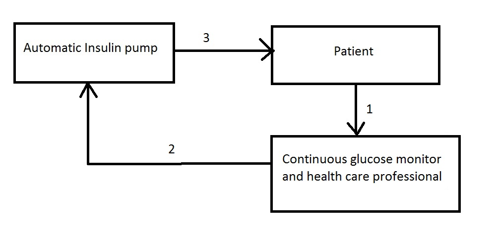
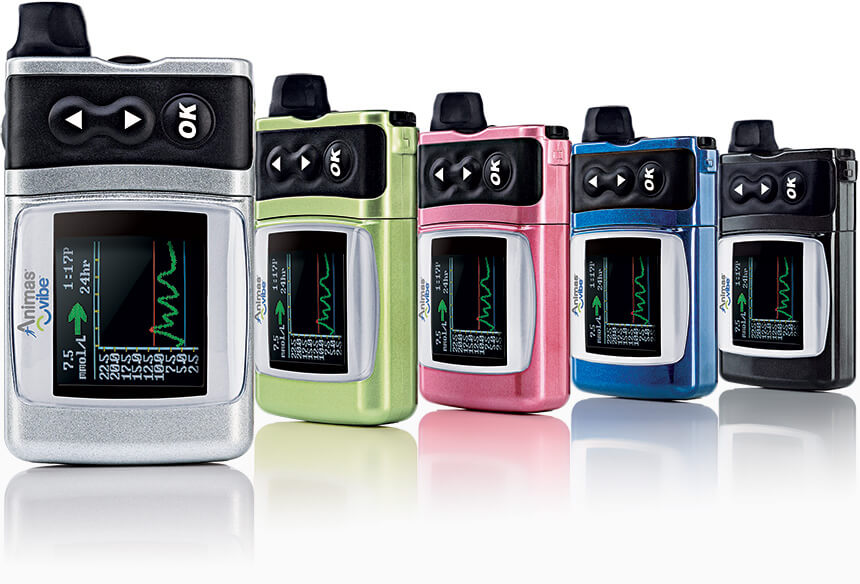

This block diagram show the process of system control in therapy. Firstly the physicians prescribe a therapy to the patient. This could be drugs, medical device based treatments, or lifestyle changes such as diet and exercise. The physician then assessed how effective the therapy is, by measuring the measurable effects and immeasurable effects. The measureable effects tend to be quantitative, from heart rates to glucose level etc…, while immeasurable effects is harder to measure, factors such as mood swing, pain. The physicians will take all of these factors into account and modified the therapy to suits the patient. This is an example of feedback.
Another example of feedback is the controller, the controller can be a medical device, a nurse or dosage of the drugs. The output of the controller is feedback to the physician, and patient also feedback to the physicians using measurable and immeasurable factors. The input to the controller is adjusted, hence this is another example of a feedback loop.
The feedback patient give, and output from the physicians can be varied. For example the physicians prescribe their patient a drug, and only to visit if there are any problems. This is an open loop system, if the patient do not feedback. While an anesthetic machine would have feedback from measurable factors from the patient to varied the input (dosage) of the drug. [1]
The MUSE (Medigus Ultrasonic Surgical Endostapler) System
Fig.1 The MUSE endoscope
Introduction
The MUSE system is a minimally invasive treatment for GERD ( Gastroesophageal reflux disease). GERD is digestive disorder that affects the lower esophageal sphincter (LES). In a healthy body, the LES open to let food through, and close to prevent the stomach acid flowing back out of the esophagus. However, this is not the case for patients affected by GERD, their LES muscles are weak, or open at unsuitable time. This will cause patient to suffer symptoms such as heartburn, chest pain, difficulties in swallowing, dry coughs and acid reflux.[2]
Overview
At first glance, the MUSE System A disposable endoscope with ultrasonic sight and range finder, with CCD camera attached at the end and staples cartridges. The aim of the treatment is to strengthen the LES opening, hence it can contract and close.
[3]
How does it work?
Why is it an example for feedback?
The endoscope have a camera and rangefinder attached at the end. The camera act as feedback to the surgeon, guiding the surgeon through the internal of the body. While the rangefinder emit a standard laser to gauge distance to a high level of accuracy. The laser is received and the distance is determined using the difference between time of sending, time of receival and speed of light. Given the distance the medical practitioner and situation eg. surgery adjustments can be made to capture a larger image.
References
Hacisalihzade, S. (2013). Biomedical applications of control engineering. 1st ed. Berlin: Springer.
WebMD. (2016). Get the Facts About Gastroesophageal Reflux Disease (GERD). [online] Available at: http://www.webmd.com/heartburn-gerd/guide/reflux-disease-gerd-1 [Accessed 17 Nov. 2016].
Mayoclinic.org. (2016). GERD Symptoms - Mayo Clinic. [online] Available at: http://www.mayoclinic.org/diseases-conditions/gerd/basics/symptoms/con-20025201 [Accessed 17 Nov. 2016].
The use of automatic insulin pump with continuous glucose monitor (CGM)
CGM is a popular device use to monitor glucose level for Type I and Type II diabetic. Diabetic patient suffered from the inability of produced insulin, which can results in fatal conditions such as hypoglycaemia and hyperglycaemia. To prevent this, patient need to inject themselves with insulin when their glucose level is high.
Recently the use of automatic insulin pump in conjunction with CGM means patient do not have to inject themselves with insulin. This is extremely beneficial to juvenile patient as they tends to be more active, cannot inject themselves with insulin, and put off by the sight of needles.
Why this is an example of feedback?

The CGM measured the glucose level from the patient.
The CGM relay that information to the automatic insulin pumps and health care professional which will adjust the system.
The automatic insulin pump would determine whether to release insulin, and if so, how much insulin should be release.
Animas Vibe Insulin Pump integrated with Dexcom G4 PLATINUM CGM

Fig.2 The Animas® Vibe® Insulin Pump & CGM System[1]
Dexcom G4 PLATINUM CGM system contain 3 parts: A small sensor which measured the glucose level underneath the skin using a tiny needles inserted into the skin via an adhesive patch, a transmitter placed on top of the sensor which received data wirelessly, and a receiver which display glucose level. The data can also relay to a smartphone via the ShareTM technology. This system provide feedback to the patient about their glucose level and allows patient to take the appropriate action, which can be eating, injecting themselves with insulin, or provide automatic insulin pump with the information to deliver medication [2]. Animas Vibe Insulin Pump use motor to pump a high dose of medication ( bolus insulin) to the patient when they are eating, and maintain a low level of insulin throughout the day ( basal insulin). The medication are deliver beneath the skin via infusion set which use flexible cannula. There are variety of infusion set with different length tubes to suit different patient. Animas Vibe Insulin Pump is waterproof and powered using lithium battery.[3]